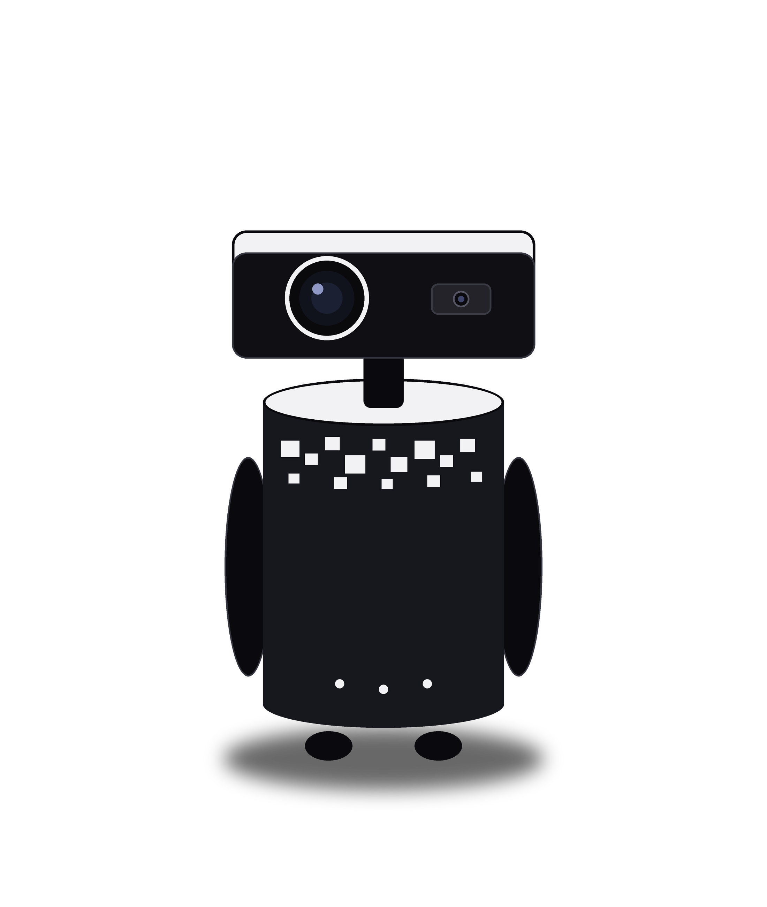

Arduino
Un archivo en lenguaje C con los modos de movimiento: automático (solo brazos), escucha (quieto) y habla (gestos). Orquesta cómo recibe información de la Raspberry Pi.
Proyecta, escucha, piensa, narra y se mueve. Cuerpo cilíndrico de 52 × 66 cm, cabeza proyectora y una franja de píxeles como firma visual.
EN NÚMEROS

CÓMO FUNCIONA
Todo el flujo lo orquesta una Raspberry Pi 5 dentro del robot. La IA recibe una sola consulta y devuelve el guion completo de la exposición: rápido, económico y predecible.
El micrófono capta tu voz y se transcribe 100% local, sin depender de internet. Un sistema detecta cuándo baja la longitud de onda para cerrar la recepción — así funciona incluso con ruido.
El orquestador de IA recibe la petición y devuelve un plan estructurado: narración por escenas, visuales y gestos.
La voz se sintetiza en español y el proyector despliega el espacio inmersivo: videos por escena o imágenes generadas al vuelo.
Un Arduino ejecuta gestos con los brazos y desplazamientos con las ruedas, dando el aspecto humano que capta la atención.
HARDWARE

CONSTRUCCIÓN
MECANISMO
EL CÓDIGO
Todo el proyecto es de código abierto y está publicado en GitHub.
Un archivo en lenguaje C con los modos de movimiento: automático (solo brazos), escucha (quieto) y habla (gestos). Orquesta cómo recibe información de la Raspberry Pi.
El orquestador en Python: recepción de voz, conversión a texto y de vuelta a voz, proyección, videos y comunicación con el Arduino. Se eligió Python por su facilidad para orquestar IA.
El portal de control técnico en HTML, CSS y JavaScript: paro de emergencia, estado del firmware, sensores, proyector y cámaras. Funciona como respaldo ante problemas técnicos.
Documentación de ensamblaje y uso: cómo armar el robot, los pines exactos del Arduino, cómo iniciar el servidor en la Pi y los requerimientos de hardware y energía.
RETOS AFRONTADOS
Al inicio no se tenían los componentes necesarios, así que hubo que optar por piezas disponibles y conseguir los elementos estrictamente necesarios.
La exigencia académica del colegio científico obligó a priorizar evaluaciones. El plazo para la magnitud del trabajo fue limitado y hubo que aprovecharlo al máximo.
El equipo no había trabajado antes con Arduino y Raspberry Pi: hubo que aprender y formular métodos para unificar su funcionamiento.
El primer proyector consumía 25 V y habría drenado la batería de 12 V en poco tiempo. Hubo que buscar uno cuyo bulbo no superara ese umbral.
BITÁCORA DE CONSTRUCCIÓN
Desliza para ver la evolución →